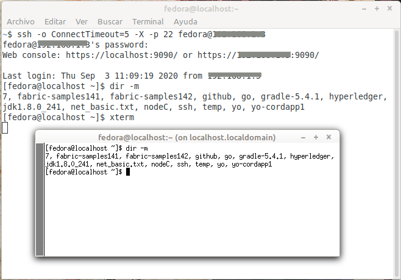

Conectarse remotamente a un servidor > ssh¶
Nombre del comando: ssh
Man page online: https://linux.die.net/man/1/ssh
Descripción: ssh (cliente SSH) es un programa para iniciar sesión en una máquina remota y para ejecutar comandos en una máquina remota. Su objetivo es proporcionar comunicaciones cifradas seguras entre dos hosts no confiables a través de una red insegura. Las conexiones X11, los puertos TCP arbitrarios y los sockets de dominio UNIX también se pueden reenviar a través del canal seguro. ssh se conecta y registra en el destino especificado, que puede especificarse como [user@]hostname o una URI de la forma ssh://[user@]hostname[:port]. El usuario debe demostrar su identidad a la máquina remota utilizando uno de varios métodos (ver más abajo). Si se especifica un comando, se ejecuta en el host remoto en lugar de la terminal del anfitrión. Nota para el administrador del servidor: el servidor remoto debe tener activo el “sshd” daemon para permitir recibir conexiones de otro cliente “ssh”, para ello se comprueba con el siguiente comando $ systemctl status sshd. Al conectarse remotamente a cualquier servidor, se nos tiene que dar por lo menos las siguientes credenciales: usuario, clave, ip o dominio y puerto de dicho servidor. Cuando las credenciales ingresadas son correctas y el servidor está disponible, entonces rápidamente se nos pedirá confirmación de la clave del usuario, de lo contrario tardará mucho tiempo y al final nos dará una serie de mensajes de error, dependiendo del problema que tenga el sistema operativo anfitrión o el sistema operativo remoto. Algunas alertas son:
Connection refused Este error indica que el servidor no está encendido en este momento o el puerto ingresado no está abierto. Este error se dispara al instante y no espera el tiempo ingresado en la opción ConnectTimeout.
Name or service not known En este error algún caracter hemos escrito mal, se dispara al instante y habrá que confirmar las credenciales que nos dieron. También se dispara al escribir el puerto seguido del dominio o ip, “user@domainOrIP:22”, por lo que es mejor agregar el puerto de esta forma “-p 22 user@domainOrIP”.
Connection timed out En este error el servidor no responde porque tiene bloqueada las conexiones ssh en el firewall o el puerto ingresado también está bloqueado.
WARNING: REMOTE HOST IDENTIFICATION HAS CHANGED! En una red local las IPs son estáticas y por tanto es bastante raro que un dispositivo tenga otra IP de la que se configuró inicialmente. También es raro cambiar la IP de un servidor que se esté abierto (que tenga un servicio disponible) en internet; sin embargo, si por algún motivo la IP cambia nos presentará este error. Este es un error del cliente ssh, el cual ya ha registrado una llave por cada servidor remoto al que nos hemos conectado, y si algo ha cambiado entonces no nos dejará conectarnos. Este problema se resuelve eliminando la llave que genera conflicto y conectarnos nuevamente para que genere una llave nueva. De este forma:
$ ssh-keygen -f "~/.ssh/known_hosts" -R "IP"
Permission denied (publickey,password) Este error se genera por dos motivos, el primero es que las credenciales ingresadas de usuario o clave son incorrectas y el segundo es que dichas credenciales no existen en el servidor. Hay dos tipos de usuarios que pueden connectarse a un servidor remoto y estos son: usuarios del sistema operativo y usuarios de alguna aplicación. Todo sistema operativo requiere un inicio de sesión con un usuario y una clave (con estas credenciales se puede conectar remotamente), pero también hay aplicaciones que definen en sus configuraciones qué usuarios se pueden conectar a ellas (estas otras credenciales también permiten conectarse remotamente, por tal motivo “SSHelper” tiene esos espacios de configuración de usuario y clave). En resumen, alguno de los usuarios antes mencionados debe existir, de lo contrario la conexión remota no se realizará.
No route to host Este error es muy común y se dispara cuando el dominio o IP o puerto ingresado no existe.
Formas válidas y correctas de conexión
La más común:
$ ssh user@domainOrIPLa versión clásica:
$ ssh -p 22 domainOrIP -l userMedio correcta:
$ ssh domainOrIP, para realizar conexiones ssh, scp o rsync se requiere especificar un usuario y una clave. Sino se ingresa el usuario el ssh tomará el usuario del cliente ssh que inició sesión, solo funcionará si el usuario del ciente ssh es igual al usuario remoto del servidor. También se puede configurar el servidor para agregar permanentemente las IP y los usuarios que se conectarán a él, pero eso no lo explicaré aquí.
¿Qué aplicaciones necesito para relizar una conexión remota?
“openssh-server”: esta aplicación es la que tiene el daemon sshd, sino está instalada y activa no se podrá conectar remotamente a su servidor.
“openssh-client”: esta aplicación es necesaria para el que quiera realizar la conexión remota a otro dispositivo.
“SSHelper”: esta aplicación es para android, si se requiere conectar remotamente a un dispositivo android, habrá que instalar esta aplicación u otra similar.
¿Cómo determinar si un servidor está disponible?
$ ping -c 3 domainorIP, por si alguien no entiende lo que un dominio o IP es, lo aclaro con un ejemplo. ¿Está google disponible en este momento?
$ ping -c 3 google.com o $ ping -c 3 172.217.15.206, si está disponible en este momento dará la respuesta de 3 paquetes recibidos, de lo contrario dirá que el 100% de los paquetes se perdieron. Sino se puede hacer ping a un servidor será por dos motivos, 1 el servidor no está disponible y 2 el servidor tiene deshabilitado el realizar un ping.
Man page local: $ man ssh o $ man ssh > ssh.txt
Instalado por defecto: Sí, al menos en Linux Mint.
Algunas Opciones:
-o option Aquí tiene una gran cantidad de opciones que por tal motivo hay otra man page dedicada específicamente para describirlas (la cual se llama “man 5 ssh_config”). Solo pondré la opción “ConnectTimeout”, la cual especifica el tiempo de espera (en segundos) utilizado cuando se conecta al servidor SSH.
-p port Puerto del servidor al cual queremos conectarnos. El puerto por defecto es “22”, pero se puede configurar según el administrador del servidor lo desee. El puerto debe estar abierto (esta es una configuración realizada en el firewall y/o en el router del servidor y solo la puede realizar el usuario administrador del mismo) para poder usarlo, de lo contrario no será posible realizar una conexión remota.
-X Permite el reenvío X11. En palabras simples, permite ejecutar una aplicación gráfica en el entorno del cliente que realizó la conexión ssh, siempre y cuando dicha aplicación esté instalada en el servidor. La mayoria de servidores linux no tienen una interfaz gráfica sino que solo son una consola y por ende no se puede abrir una aplicación gráfica directamente. Por ejemplo para editar archivos de configuración en un servidor se usa editores como “nano” o “vim”, si se quiere usar un editor de texto más cómodo como “gedit” habrá que instalarlo en el servidor. Todas las configuraciones de un servidor se pueden hacer desde una consola de comandos, sin embargo, por comodidad se pueden instalar aplicaciones gráficas y es ahí donde este parámetro es útil a la hora de realizar una conexión ssh.
Ejemplo 1: $ ssh -o ConnectTimeout=5 -X -p 22 fedora@188.144.10.5, en este ejemplo estoy realizando una conexión remota a un servidor “fedora” y le digo que sino hay respuesta en 5 segundos entonces que no continue esperando respuesta. Estas son las credenciales usadas para este ejemplo: usuario = fedora, clave = miclavefedora, puerto = 22, domainOrIP = 188.144.10.5. Como voy a usar una aplicación gráfica le agrego el parámetro “-X”, como se aprecia en la imagen de arriba, he cargado una ventana de “xterm” instalada en fedora que se ejecuta en mi sistema operativo.
Ejemplo 2: $ ssh -o ConnectTimeout=5 -X -p 22 fedora@188.144.10.4, este ejemplo es el mismo que el ejemplo 1 con la variante que el último número de la IP es 4, como mi servidor no tiene esa IP entonces no lo encuentra.
Ejemplo 3: $ ssh -o ConnectTimeout=5 -X -p 2240 fedora@188.144.10.5, en este ejemplo he agregado un puerto que no existe por ende no realizará la conexión remota.